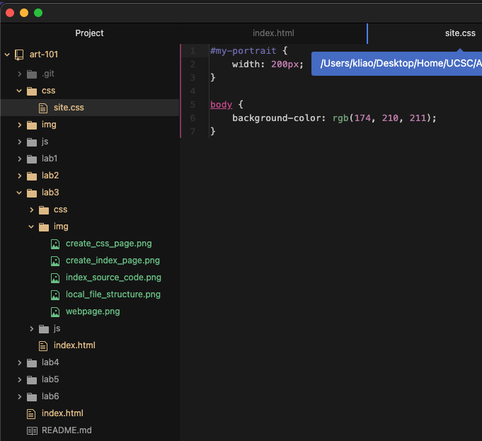

The goal of this lab is to create a local file structure on your computer, add index.html files, and upload to the server.
The main difficulties with this lab was getting the images to show up on the index page. I kept misspelling the names of the images and forgetting to add the '.png' when img source.
These are the progress screenshots of my work for Lab 3.
This is what the local file structure looks like on atom.
This is what the art101 folder index.html source code looks like .
This is what the css page for the art101 folder index.html looks like.

This is what the final lab 3 index.html page looks like on the browser.
This is what the final lab 3 index.html source code looks like .
This is what the css page for the lab 3 index.html looks like.